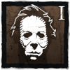

O VULTO
Michael Myers, um Vulto que espreita ao longe, aguardando pacientemente.
Sua maldade se acumula enquanto estiver espreitando Sobreviventes, concedendo-lhe um poder malévolo. Ao longo da partida, o Vulto evolui de uma ameaça discreta a um colosso implacável capaz de retalhar a equipe mais resiliente.
Raio de Terror: 0m
Velocidade: 4.2 m/s
Altura: Alto
Poder:
Maldade Encarnada

O Vulto tem três níveis de Maldade Encarnada, que cresce conforme ele espreita Sobreviventes.
No Nível 1, o Vulto não tem Raio de Terror e pouca velocidade e investida.
No Nível 2, ele tem um Raio de Terror reduzido e velocidade e investida normais.
No Nível 3, ele pode derrubar Sobreviventes instantaneamente com uma investida letal ampliada por uma duração estendida antes de voltar ao Nível 2.
VANTAGENS
Perdendo a Esperança |
Você fica obcecado por um Sobrevivente. Aplique penalidades ao enganchar Sobreviventes. Sua Obsessão não sofre das penalidades, além de ganhar bônus de velocidade de ação altruísta. |
Brinque com Sua Comida |
Você fica obcecado por um Sobrevivente. Toda vez que persegue sua Obsessão e a deixa fugir, você recebe um ponto de progressão que aumenta sua velocidade de movimento. Cada ação ofensiva consome um ponto. |
Deixe o Melhor para o Final |
Você fica obcecado por um Sobrevivente. Receba pontos de progressão por acertar Sobreviventes além da Obsessão. Perca pontos de progressão ao acertar a Obsessão. Mais pontos de progressão concedem tempo de recarga mais rápido ao executar ataques bem-sucedidos com a arma. |